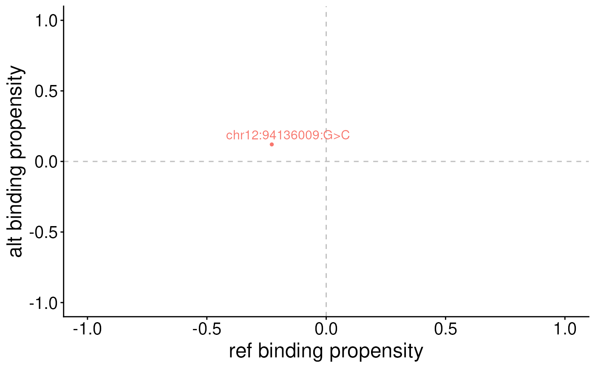

Plot non-alt versus alt binding propensity for a single motif
Source:R/plotSemVariants.R
plotSemVariants.RdPlot non-alt versus alt binding propensity for a single motif
Usage
plotSemVariants(s, sem, label = "varId", cols = c("#F8766D", "dodgerblue2"))Examples
library(VariantAnnotation)
data(sc)
# create an SNP Effect Matrix (SEM)
sem <- matrix(rnorm(12), ncol = 4)
colnames(sem) <- c("A", "C", "G", "T")
# create a VRanges object
vr <- VRanges(seqnames = "chr12",
ranges = 94136009,
ref = "G", alt = "C")
# calculate binding propensity
s <- scoreVariants(vr, sc, BSgenome.Hsapiens.UCSC.hg19::Hsapiens)
plotSemVariants(s, "IKZF1_HUMAN.GM12878")
